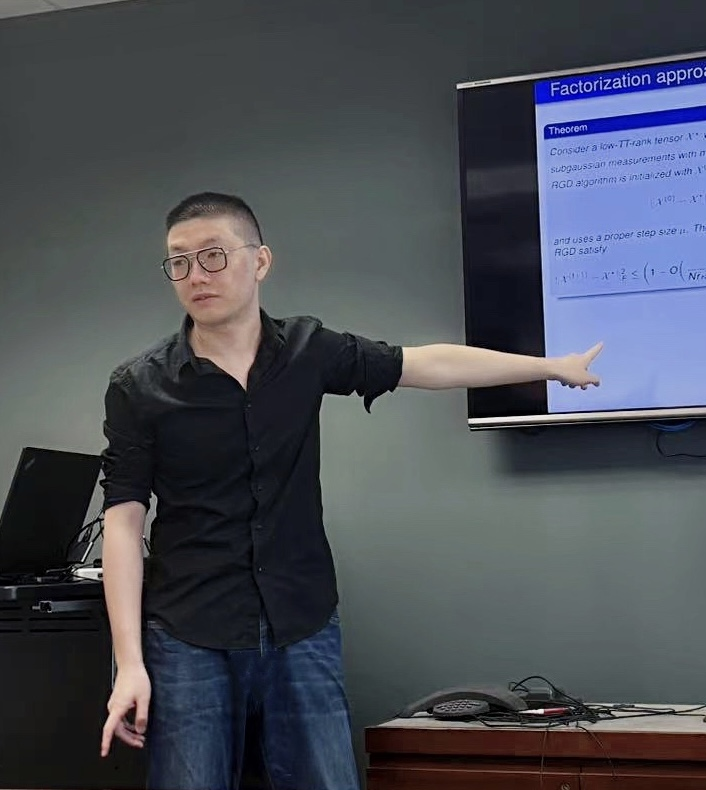

|
|
 |
Zhen Qin
Ohio State University
Department of Computer Science and Engineering
Email: qin.660@osu.edu
Google Scholar
| CV
|
Zhen Qin
Hello, I am Zhen Qin, a fourth-year PhD student in the Department of Computer Science and Engineering at Ohio State University.
I am privileged to be under the guidance of Prof. Zhihui Zhu.
My current research encompasses several intriguing domains:
Quantum information, Quantum tomography,
Structured optimization for tensor decomposition, signal processing and communication,
Special structures of high-dimensional space including sparse, low-rank, manifold-based and tensor networks-based models.
My research is situated at the intersection of optimization, signal processing and quantum information theory.
It is dedicated to unraveling and comprehending foundational, computational,
and theoretical challenges within the domain of quantum information, achieved
through methodologies from optimization, signal processing, and classical information theory.
I am currently seeking a postdoctoral position starting in the autumn or winter of next year,
with a focus on utilizing optimization,
signal processing, and low-dimensional structures to address real-world high-dimensional problems.
While my primary research area lies in quantum information, I am also open to exploring other challenging engineering problems.
If you are interested in my profile or have relevant opportunities, please feel free to contact me.
News and Updates
[Oct 2024] Our
paper has been released at arXiv, offering a theoretical analysis of the robust tensor train (TT) recovery problem and demonstrating
that TT-format tensors can be robustly recovered even when up to half of the measurements are arbitrarily corrupted.
[Oct 2024] Our
paper has been released at arXiv, proving that a linear number of state copies is
required to guarantee bounded recovery error of an matrix product operator state in the quantum state tomography, thereby improving
the theoretical result in our
TIT paper.
[Jun 2024] Our
paper has been released at arXiv, offering computational and statistical
guarantees for tensor-on-tensor regression with tensor train decomposition.
[Mar 2024] Our
paper has been accepted at SPL, analyzing the linear converence rate of training the orthonormal deep linear neural networks.
[Jan 2024] Our
paper has been accepted at TIT, demonstrating that a polynomial number of state copies is
required to guarantee bounded recovery error of an matrix product operator state in the quantum state tomography.
[Jan 2024] Our
paper has been released at arXiv, offering a convergence guarantee for the factorization approach in
arbitrary-order tensor train recovery.
[Jan 2024] A series of proportionate recursive least squares (PRLS) algorithms have been completed and accepted in the following papers:
paper: PRLS,
paper: L1-PRLS,
paper: VSS-CR-PRLS and
paper: Fast PRLS,
exploring proportionate sparsity in the adaptive signal processing.
Select Publications
Z. Qin and Z. Zhu, ‘‘
Robust Low-rank Tensor Train Recovery”, arXiv preprint arXiv:2410.15224, 2024.
Z. Qin, C. Jameson, A. Goldar, Z. Gong, M. B. Wakin and Z. Zhu, ‘‘
Sample-Optimal Quantum State Tomography for Structured Quantum States in One Dimension”, arXiv preprint arXiv.2410.02583, 2024.
Z. Qin and Z. Zhu, ‘‘
Computational and Statistical Guarantees for Tensor-on-Tensor Regression with Tensor Train Decomposition”, arXiv preprint arXiv:2406.06002, 2024.
Z. Qin, C. Jameson, Z. Gong, M. B. Wakin and Z. Zhu, ‘‘
Quantum State Tomography for Matrix Product Density Operators”, IEEE Transactions on Information Theory (TIT), 2024.
Z. Qin, M. B. Wakin and Z. Zhu, ‘‘
Guaranteed Nonconvex Factorization Approach for Tensor Train Recovery”, arXiv preprint arXiv:2401.02592, 2024.
|